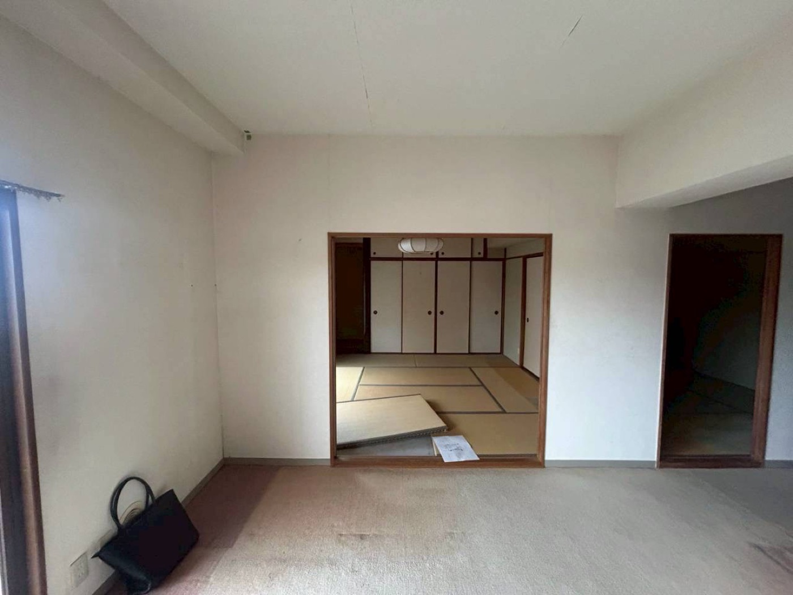
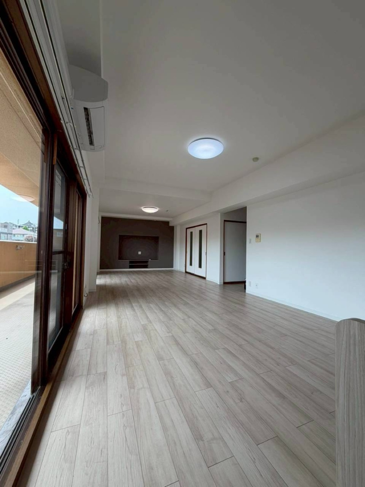
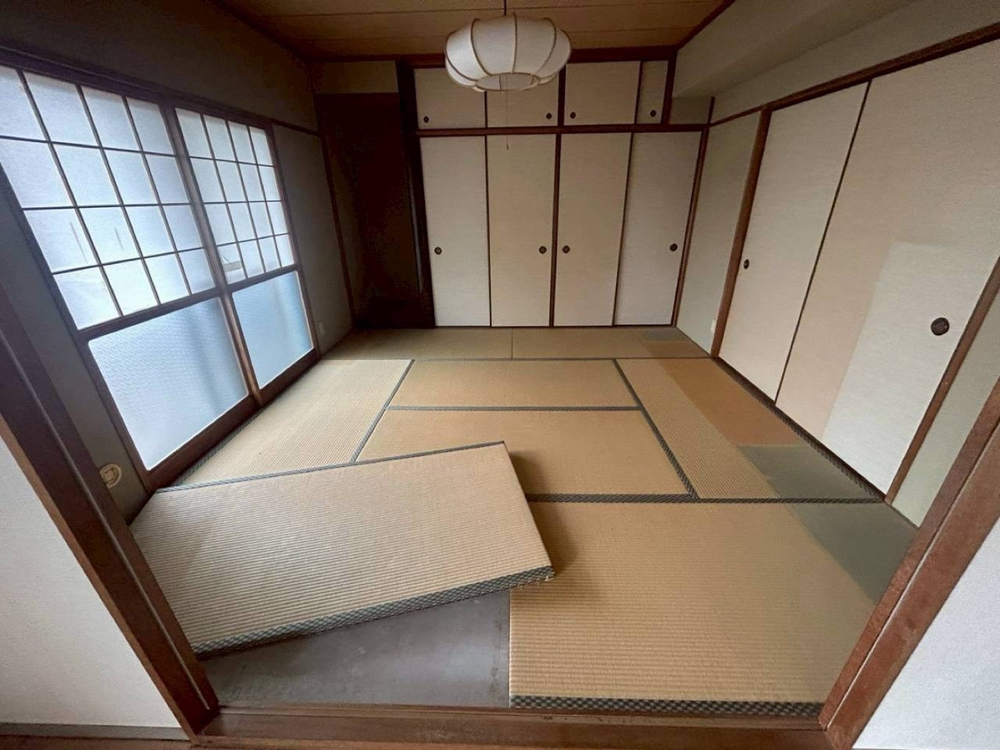
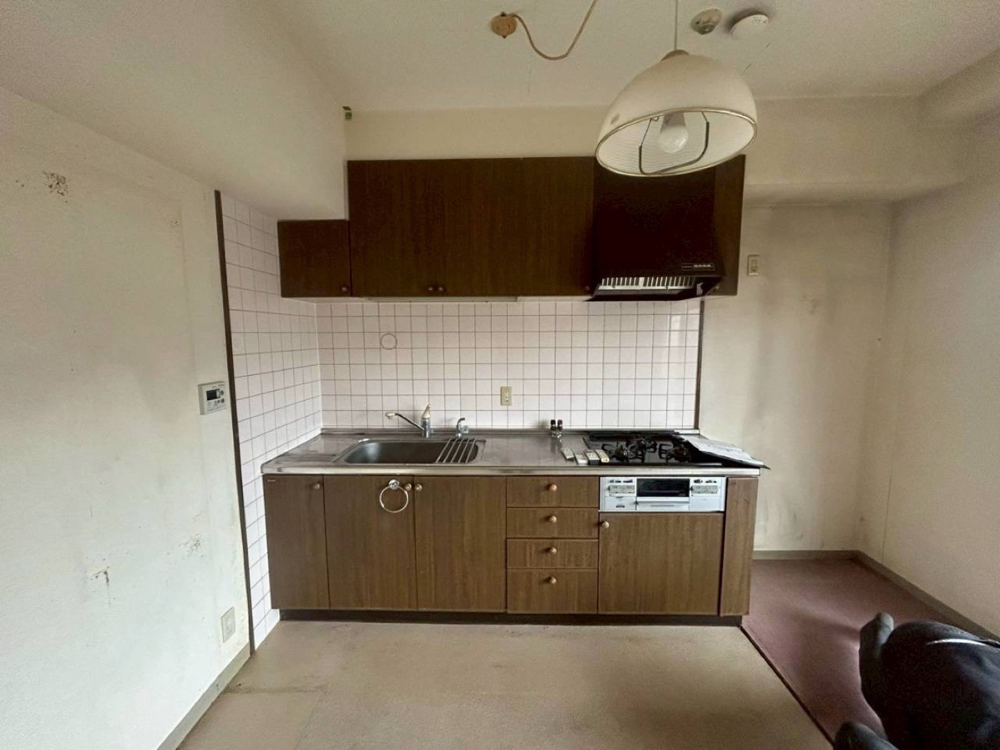
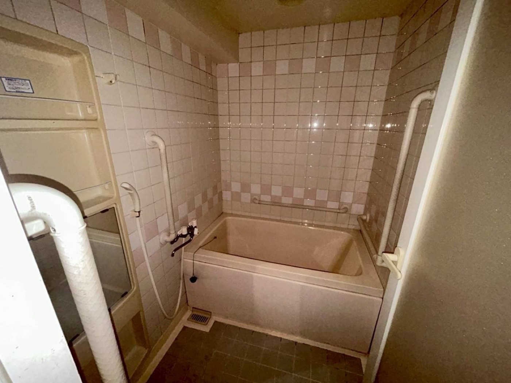
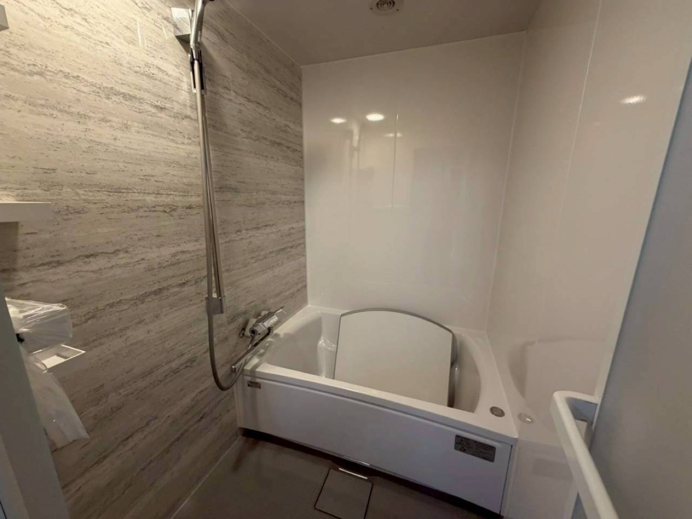
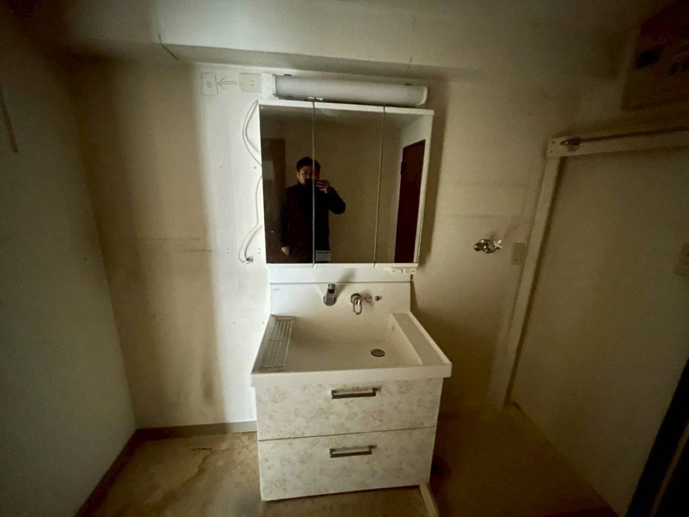
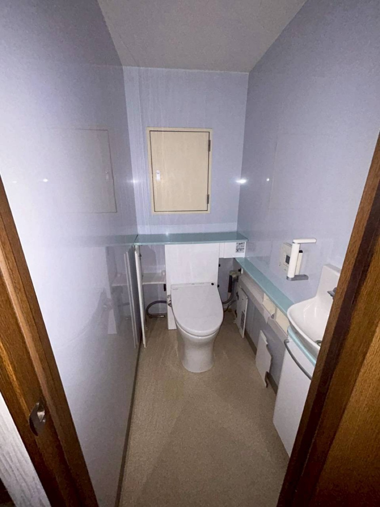
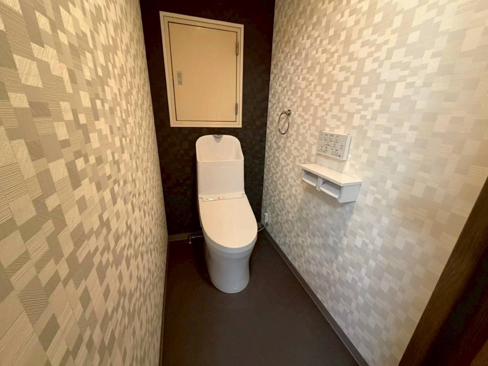

— Transformation
Before & After ビフォア／アフター
間取りから、水回り、トイレまで。
住まいの空気感まで生まれ変わった、5つの変化。
Before

— 01 ／ 細切れの居室＋和室
After

— 01 ／ 開放的なLDK
Before

— 02 ／ 畳と襖の和室
After

— 02 ／ 明るいフローリング空間
Before

— 03 ／ 焦げ茶のシステムキッチン
After

— 03 ／ 木目で揃えた現代的キッチン
Before

— 04 ／ タイル張りのユニットバス
After

— 04 ／ ストーン調パネルの新ユニットバス
Before

— 05 ／ 暗くて狭い洗面所
After

— 05 ／ 三面鏡の広い洗面所
Before

— 06 ／ 既存のトイレ
After

— 06 ／ アクセントクロスのモダンなトイレ